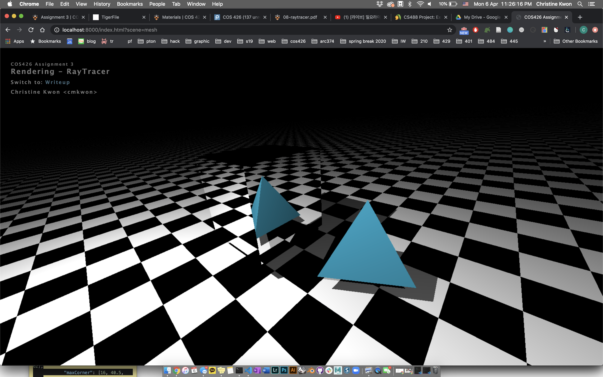
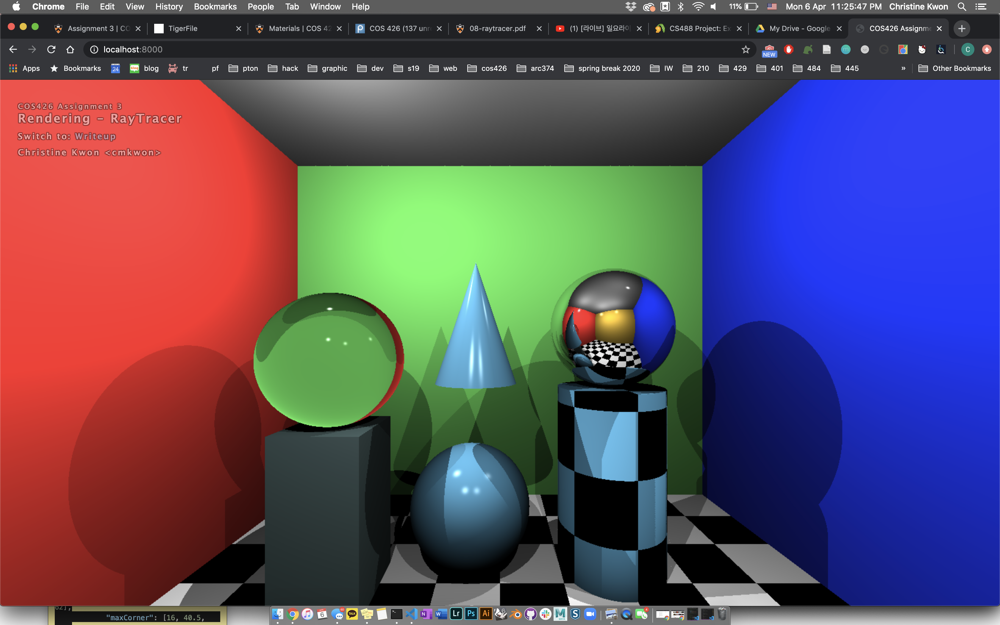
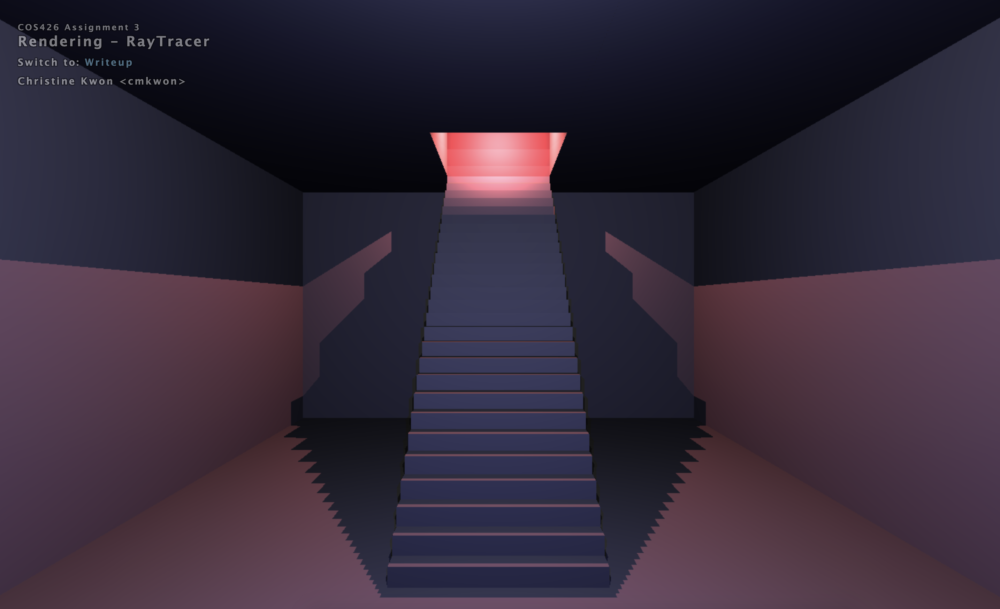
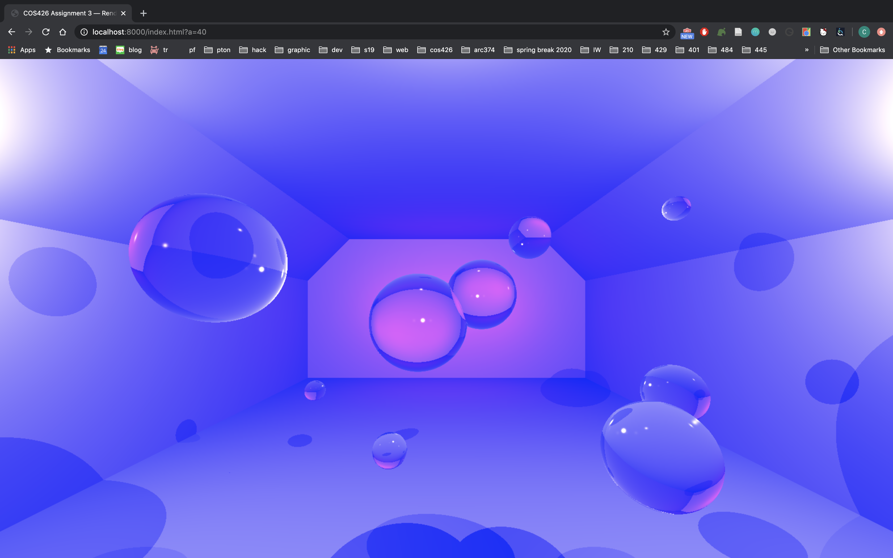

COS426 Assignment 3 Ray Tracer — Writeup
Switch to: Interactive Editor
That all images in this writeup were generated directly by my solution code or provided by the course staff (exception: art contest submissions may pass through intermediary software like GIMP)
That no other student has viewed my writeup explanations or my writeup images
That my solution code is my own work; particularly that my solution was not copied from any other student's solution code, and that no other student copied their solution directly code from me
That I did not discuss assignment specifics or view the solution code of any other student besides that of my (optional) partner
That I have followed all other course collaboration and course plagiarism policies as written on the course website.
Christine Kwon (cmkwon)
Collaborated with: Christy Lee, Anabelle Chang (christyl, anabelle)
- (1.0) Trace Ray and Calculate Color
- (2.0) Triangle
- (2.0) Sphere
- (2.5) Box
- (2.0) Cylinder
- (3.0) Cone
- (1.0) Shadows
- (3.0) Soft shadows
- (2.0) Transmission
- (1.0) Checkerboard
- (1.5) Phong material
- (1.5) Special material
- (1.0) Custom Scene
- (2.0) Animation
- (0-5) Technical Extensions
- (1.0) Art Contest
TraceRay
For the first part of the assignment, I followed the provided
instructions to complete the traceRay and calculateColor
functions.
Triangle
I find the normal of the plane defined by the three given points.
Then, I find the position on the plane that the ray intersects using findIntersectionWithPlane.
After that I utilize the second method described in the lecture to determine if the point lies within the triangle.

Sphere
I find the nearest closest intersection on the sphere using the algorithm described in lecture.
Then I find the intersection with the plane.

Box
I intersect the ray with each side of the box with findIntersectionWithPlane, and find the closest intersection.
Cylinder
In getIntersectOpenCylinder, I set up the three equation a, b, and c as described in the assignment
specifications to solve for the two solutions of for the quadratic. Then, I find the smallest positive solution
that satisfies the relations and use this value to calculate the intersection.
In getIntersectDisc, I use the intersection formulae for the bottom and top caps.
Cone
In getIntersectOpenCone, II set up the three equation a, b, and c as described in the assignment
specifications to solve for the two solutions of for the quadratic. Then, I find the smallest positive solution
that satisfies the relations and use this value to calculate the intersection.
Shadows
I compute the distance from position pos to the light. If this distance is less than the length of the
light vector, the position is in the shadow, and false otherwise.
Soft shadows
(Your description of your implementation of Soft shadows goes here...)
Transmission
I use Snell's law to determine the outgoing refraction direction.
Checkerboard
I used a scale factor of 8 for the tile size.
For each of the 3 components of posIntersection, I divide by 8 and round up to the nearest integer, and sum up all of the values.
If the remainder of dividing the sum by 2 is zero, I color the pixel black.
Phong material
I utilize the equation given in lecture to calculate the phongTerm.
Special material
(Your description of your implementation of Special material goes here...)
Custom Scene
I was inspired by one of the scenes in Drake's "Hotline Bling" music video, so I created a staircase leading up to an opening in the ceiling in 'hb.json'.
Each of the stairs is a box, and the ceiling is also composed of four boxes pieces together with an opening in the middle.

Animation
In 'bubbles.json,' I created a deeper and wider looking room that is illuminated with pink and blue lights.
I placed multiple glass spheres of varying radii at random locations in the room.
I added a field 'a' that can be appended to the url, that indicates a time interval, and it is used to calculate the size of the new radii for each sphere in the scene in 'scene.js'.
For example, if a=1, then each of the spheres' radii increases or decreases by 1.
I have also added a field called 'sign' in the sphere object, which is set to -1 for spheres that shrink from the start (a=0), and 1 for spheres that grow as the scene progresses.
The spheres all have a maximum radius of 10, so when it grows up to that value, it starts shrinking.
Similarly, once a sphere shrinks down to 0, it grows back up.
In short, all of the glass spheres with different starting sizes grow and shrink while staying between radius values of 0 and 10.
The video can be found here: https://drive.google.com/file/d/1FGI7l3n1Nbn5Ic_XLEN5otVJnHRDk8bs/view?usp=sharing

Technical Extensions
(Your description of your implementation of Technical Extensions goes here...)
Art Contest
I would like to submit my animation to the art contest:
https://drive.google.com/file/d/1FGI7l3n1Nbn5Ic_XLEN5otVJnHRDk8bs/view?usp=sharing
Description:
I created a deeper and wider room that is illuminated with pink and blue lights, and placed multiple glass spheres of varying radii at random locations in the room.
All of the glass spheres have different starting sizes, and they repeatedly grow and shrink while staying between radius values of 0 and 10.